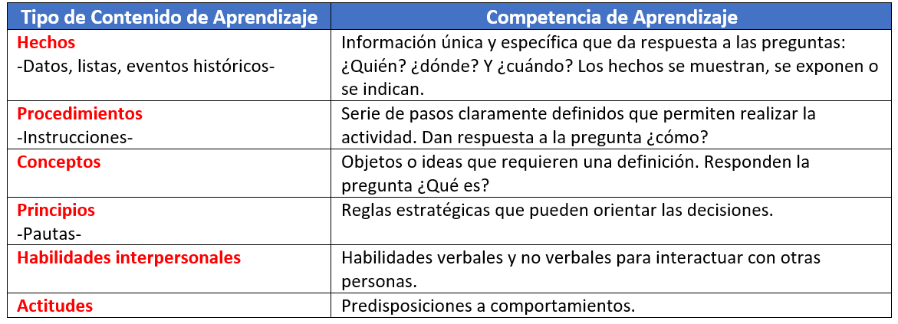

Determinar por medio de un diagrama, el contenido de posibles actividades VIRTUALES a ser diseñadas para su asignatura, de forma que permita fortalecer aún más el contenido para que el estudiante adquiera la competencia.
Para desarrollar el diagrama considere lo siguiente:
1.- Seleccionar uno de los Elementos de Competencia de la Secuencia Didáctica de su asignatura. Con ello se pretende tener claro en relación a qué tema se diseñarán las nuevas actividades virtuales.
2.- Independiente de las actividades ya establecidas en ese Elemento de Competencia, identificar otras posibles actividades para reforzar la competencia en los estudiantes. Considere que estas nuevas actividades se llevarán a cabo totalmente en un ambiente virtual. Haga un listado de ellas.
Para facilitar la identificación de posibles actividades:
- Identifique competencias laborales que los estudiantes deben aprender o mejorar.
- o Identifique conocimientos y habilidades que deben desarrollar o reforzar.
- Crear escenarios basados en casos de contextos laborales realistas.
3.- Para afinar el bosquejo, clasificar ese listado de nuevas actividades de aprendizaje, según el tipo de contenido que representará cada una de ellas:

4.- Del listado que ha generado, seleccione solamente una actividad cuyo contenido de aprendizaje sea preferentemente del tipo Principios (Pautas), es decir, que la actividad a realizar oriente al estudiante a tomar decisiones. Y analice más específicamente, cuál podría ser el contenido total para esa actividad. El contenido debe ser preciso y pertinente de forma que le permita definir las estrategias de enseñanza y medios para desarrollarla como una actividad pedagógica.
5.- Para esa actividad seleccionada, describir su contenido en forma de directrices a aplicar por el estudiante para esa tarea o adquisición de conocimientos y habilidades. Adicional a las directrices, tomar en cuenta los conocimientos y habilidades que deben tener los alumnos para el logro de cada una de ellas.
Las directrices y los elementos de conocimientos asociados, compondrán finalmente parte de la descripción de la actividad. La información que se plasme en este diagrama, es indispensable para trabajar con la siguiente fase de diseño. Por lo que, se sugiere realizar un diagrama de datos (verificar material de apoyo Ejemplo de Análisis) que contenga:
- ELEMENTO DE COMPETENCIA
- Descripción del conocimiento o habilidad a aprender, desarrollar o reforzar.
- Directrices.
- Conocimientos necesarios.
6.- Una vez desarrollado su análisis, conserve la evidencia porque será el recurso básico para la Fase 2 Diseñar del Modelo ADDIE. Este análisis se entregará junto con la evidencia que se genere en la Actividad 3.
Normas o instrucciones que deben seguir los estudiantes para lograr el aprendizaje.